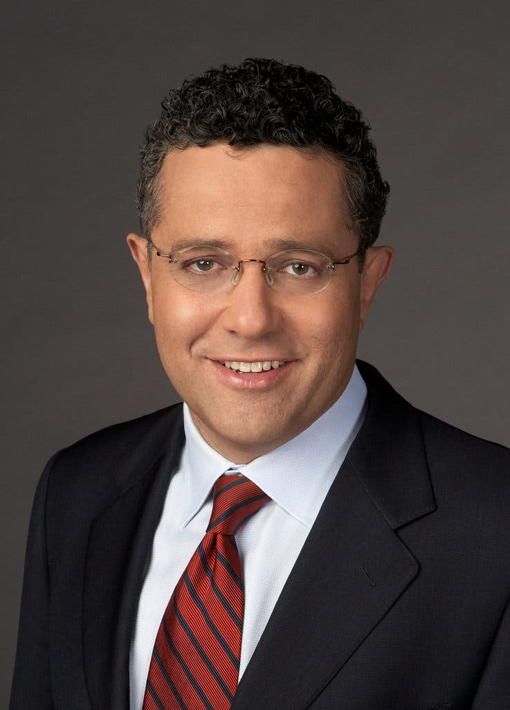

Our Mission
San Joaquin Valley Town Hall is a non-profit organization that is run by an all-volunteer board of directors. Our mission is to bring nationally and internationally renowned, thought-provoking speakers who inform, educate, and entertain our audience! As one or our members told us:
Each year I give a ticket package to each of our family members. I think of it as the gift of knowledge...and that os priceless.
Our Ticket Packages
This season's guest speakers
October
Jeffrey Toobin

November
Andrew Ross Sorkin

January
Amy Chua